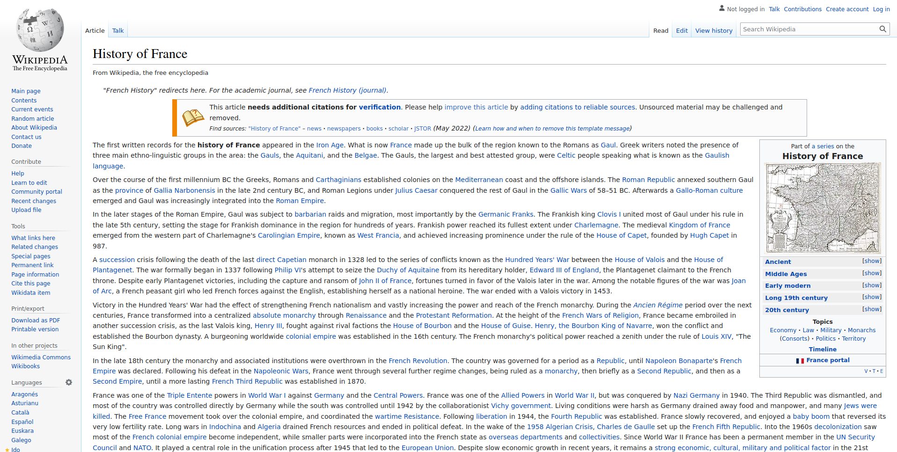
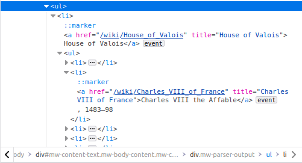

knitr::opts_chunk$set(
eval = TRUE,
echo = TRUE,
message = FALSE,
warning = FALSE,
fig.align = "center",
fig.asp = 0.618
)Introduction to Regex
Regular expressions
- Regular expressions, also called “regex”
Imagine you are playing a treasure hunt game and you are given a clue that says “the treasure is hidden in a sentence with the word ‘treasure’ in it.” You would use regex to help you quickly find the sentence with the word “treasure” in it, like a treasure hunter using a metal detector to find gold.
What do you mean?
library(stringr)
library(scrapex)
library(rvest)
library(xml2)
library(lubridate)
library(vistime)
library(tibble)
borges <- "I like hourglasses, maps, eighteenth century typography."
str_view_all(borges, "eighteenth")Why is this useful?
str_replace_all(borges, "eighteenth", "[DATE]")[1] "I like hourglasses, maps, [DATE] century typography."str_extract_all(borges, "eighteenth")[[1]]
[1] "eighteenth"Not very handy because you know the word you’re extracting 😅
The . placeholder
Matches any letter, number or any type of character.
borges <- "I like hourglasses, maps, eighteenth Eighteenth century typography."
str_view_all(borges, ".ighteenth")Also spaces..😥
borges <- "I like hourglasses, maps, ighteenth century typography."
str_view_all(borges, ".ighteenth")Quantifiers
The . is often used with + which means that the character . needs to be repeated one or more times. This example is a great motivation:
borges_two_phrase <- c(
"I like hourglasses, maps, eighteenth century typography.",
"I like hourglasses, maps, seventeenth century typography."
)
str_view_all(borges_two_phrase, "maps, . century")Quantifiers
What you want is:
str_view_all(borges_two_phrase, "maps, .+ century")Escaping .
What if you wanted to actually match .?
borges <- "I like hourglasses. I also like maps, eighteenth century typography"
str_view_all(borges, "I like .+")Good but matches the entire phrase. How do we match until the .?
str_view_all(borges, "I like .+\\.")The OR (|) operator
You’ll often want to match either one regexp or another. Suppose we want to extract the century from the vector below.
borges_two_phrase <- c(
"I like hourglasses, maps, eighteenth century typography.",
"I like hourglasses, maps, seventeenth century typography."
)
res <- str_extract_all(borges_two_phrase, "maps, .+ century")
res[[1]]
[1] "maps, eighteenth century"
[[2]]
[1] "maps, seventeenth century"The OR (|) operator
Use | to separate regex. Here we use it to say: replace either map, (contains the space) or century (contains a space):
res %>% str_replace_all("maps, | century", "")[1] "eighteenth" "seventeenth"Anchors
Anchors are ^ for beginning and $ for ending. If you start with power, you end up with money.
borges <- "I like hourglasses. I also like maps, eighteenth century typography"
str_view_all(borges, "^.", match = TRUE)str_view_all(borges, ".$", match = TRUE)Anchors
borges_long <- c(
"I like cars. I like hourglasses, maps, eighteenth century typography",
"I like computers. I like hourglasses, maps, eighteenth century typography"
)
str_view_all(borges_long, "I like .+")Both phrases have “I like” at the beginning but also have “I like” after the end of the first sentence. What if we want to match only the first sentence?
Anchors
Instead, we use anchors:
str_view_all(borges_long, "^I like .+\\.")🤩
Special classes: \\d
\\d matches digits
gdp <- c(
"Afghanistan 516 US dollars",
"Albania 6494 US dollars",
"Algeria 3765 US dollars",
"American Samoa 12844 US dollars",
"Andorra 43047 US dollars"
)
str_view_all("Angel is 8 years old", "\\d")Special classes: \\d
\\d matches single digits
str_view_all(
c("Angel is 8 years old", "Martha is 56 years old"),
"\\d"
)Special classes: \\d
Instead we want:
str_view_all(
c("Angel is 8 years old", "Martha is 56 years old"),
"\\d+"
)Special classes: []
Shortcut to extend the regexp | (or) and make it more flexible:
retirement <-
read_html(retirement_age_europe_ex()) %>% html_table() %>% .[[2]]
retirement# A tibble: 41 × 6
Country Men Women Year Notes References
<chr> <chr> <chr> <chr> <chr> <chr>
1 Albania 65 61 2020 "" [1]
2 Austria 65 60 2018 "In … [1][3]
3 Belarus 62.5 57.5 2021 "By … [5]
4 Belgium 65 65 2018 "In … [5]
5 Bosnia and Herzegovina 65 65 2011 "" [1]
6 Bulgaria 64 (and 4 months) 61 (and 8 mo… 2021 "In … [2]
7 Croatia 65 62 2018 "By … [2]
8 Cyprus 65 65 2018 "" [1][3]
9 Czech Republic 63 (and 4 months) 58 (and 8 mo… 2018 "In … [7]
10 Denmark 67 67 2022 "In … [3][5]
# … with 31 more rowsSpecial classes: []
str_view_all(retirement$Men, "6[789]")See output at here.
Special classes: []
str_view_all(retirement$Men, "6[7-9]")Note that [] works the same way for anything: numbers, letters, punctuation, spaces, etc..
Special classes: [^]
[^abc]: matches anything except a, b, or c.
str_view_all(retirement$Men, "6[^5-9]")All ages which are below 65 will be matched.
Case study: mapping the kings of France
scrapex contains a copy of the Wikipedia page “History of France”:

Case study: mapping the kings of France
Let’s load the HTML:
history_france_html <- history_france_ex()
history_france <- read_html(history_france_html)
Case study: mapping the kings of France

Case study: mapping the kings of France

Case study: mapping the kings of France
ul tags are very common and subsetting only for ul tags will bring many matches. XPath is the topic of next chapter but bear with me.
//ul: bring allultags from the document[.//a]: subset allatags that are below allultags (notice the.)[contains(@title, "House of Valois")]: where thisatag needs to have atitleattribute that contains “House of Valois”.
Case study: mapping the kings of France
history_france %>%
xml_find_all("//ul[.//a[contains(@title, 'House of Valois')]]"){xml_nodeset (2)}
[1] <ul>\n<li>\n<a href="https://en.wikipedia.org/wiki/Capetian_Dynasty" clas ...
[2] <ul>\n<li>\n<a href="https://en.wikipedia.org/wiki/House_of_Valois" title ...Case study: mapping the kings of France
Let’s pick the second slot and redo the XPath
all_txt <- history_france %>%
xml_find_all("//ul[.//a[contains(@title, 'House of Valois')]][2]") %>%
xml_text()
all_txt[1] "House of Valois\nLouis XI the Prudent, 1461–83\nCharles VIII the Affable, 1483–98\nLouis XII, 1498–1515\nFrancis I, 1515–47\nHenry II, 1547–59\nFrancis II, 1559–60\nCharles IX, 1560–74 (1560–63 under regency of Catherine de' Medici)\nHenry III, 1574–89\nHouse of Bourbon\nHenry IV the Great, 1589–1610\nthe Regency of Marie de Medici, 1610–17\nLouis XIII the Just and his minister Cardinal Richelieu, 1610–43\nthe Regency of Anne of Austria and her minister Cardinal Mazarin, 1643–51\nLouis XIV the Sun King and his minister Jean-Baptiste Colbert, 1643–1715\nthe Régence, a period of regency under Philip II of Orléans, 1715–23\nLouis XV the Beloved and his minister Cardinal André-Hercule de Fleury, 1715–74\nLouis XVI, 1774–92"This is where regex comes in. Let’s use our ninja skills 🦾!
Case study: mapping the kings of France
all_txt <-
all_txt %>%
str_split("\n") %>%
.[[1]]
all_txt [1] "House of Valois"
[2] "Louis XI the Prudent, 1461–83"
[3] "Charles VIII the Affable, 1483–98"
[4] "Louis XII, 1498–1515"
[5] "Francis I, 1515–47"
[6] "Henry II, 1547–59"
[7] "Francis II, 1559–60"
[8] "Charles IX, 1560–74 (1560–63 under regency of Catherine de' Medici)"
[9] "Henry III, 1574–89"
[10] "House of Bourbon"
[11] "Henry IV the Great, 1589–1610"
[12] "the Regency of Marie de Medici, 1610–17"
[13] "Louis XIII the Just and his minister Cardinal Richelieu, 1610–43"
[14] "the Regency of Anne of Austria and her minister Cardinal Mazarin, 1643–51"
[15] "Louis XIV the Sun King and his minister Jean-Baptiste Colbert, 1643–1715"
[16] "the Régence, a period of regency under Philip II of Orléans, 1715–23"
[17] "Louis XV the Beloved and his minister Cardinal André-Hercule de Fleury, 1715–74"
[18] "Louis XVI, 1774–92" Case study: mapping the kings of France
We have 16 kings/queens but there are two slots that separated them by houses: House of Valois and House of Bourbon.
all_txt <- all_txt[!str_detect(all_txt, "^House")]
all_txt [1] "Louis XI the Prudent, 1461–83"
[2] "Charles VIII the Affable, 1483–98"
[3] "Louis XII, 1498–1515"
[4] "Francis I, 1515–47"
[5] "Henry II, 1547–59"
[6] "Francis II, 1559–60"
[7] "Charles IX, 1560–74 (1560–63 under regency of Catherine de' Medici)"
[8] "Henry III, 1574–89"
[9] "Henry IV the Great, 1589–1610"
[10] "the Regency of Marie de Medici, 1610–17"
[11] "Louis XIII the Just and his minister Cardinal Richelieu, 1610–43"
[12] "the Regency of Anne of Austria and her minister Cardinal Mazarin, 1643–51"
[13] "Louis XIV the Sun King and his minister Jean-Baptiste Colbert, 1643–1715"
[14] "the Régence, a period of regency under Philip II of Orléans, 1715–23"
[15] "Louis XV the Beloved and his minister Cardinal André-Hercule de Fleury, 1715–74"
[16] "Louis XVI, 1774–92" There we go, 16 names and their corresponding period.
Case study: mapping the kings of France
We want to extract:
name of monarch
years in power
Problem is:
all_txt[7][1] "Charles IX, 1560–74 (1560–63 under regency of Catherine de' Medici)"These are just clarifications so we should just remove.
Case study: mapping the kings of France
Strategy: (1) escape parenthesis and (2) match anything inside the parenthesis
all_txt <-
all_txt %>%
str_replace_all(pattern = "\\(.+\\)", replacement = "")
all_txt [1] "Louis XI the Prudent, 1461–83"
[2] "Charles VIII the Affable, 1483–98"
[3] "Louis XII, 1498–1515"
[4] "Francis I, 1515–47"
[5] "Henry II, 1547–59"
[6] "Francis II, 1559–60"
[7] "Charles IX, 1560–74 "
[8] "Henry III, 1574–89"
[9] "Henry IV the Great, 1589–1610"
[10] "the Regency of Marie de Medici, 1610–17"
[11] "Louis XIII the Just and his minister Cardinal Richelieu, 1610–43"
[12] "the Regency of Anne of Austria and her minister Cardinal Mazarin, 1643–51"
[13] "Louis XIV the Sun King and his minister Jean-Baptiste Colbert, 1643–1715"
[14] "the Régence, a period of regency under Philip II of Orléans, 1715–23"
[15] "Louis XV the Beloved and his minister Cardinal André-Hercule de Fleury, 1715–74"
[16] "Louis XVI, 1774–92" Case study: mapping the kings of France
Extract years in power:
res <-
all_txt %>%
str_extract_all("\\d+")
res[[1]]
[1] "1461" "83"
[[2]]
[1] "1483" "98"
[[3]]
[1] "1498" "1515"
[[4]]
[1] "1515" "47"
[[5]]
[1] "1547" "59"
[[6]]
[1] "1559" "60"
[[7]]
[1] "1560" "74"
[[8]]
[1] "1574" "89"
[[9]]
[1] "1589" "1610"
[[10]]
[1] "1610" "17"
[[11]]
[1] "1610" "43"
[[12]]
[1] "1643" "51"
[[13]]
[1] "1643" "1715"
[[14]]
[1] "1715" "23"
[[15]]
[1] "1715" "74"
[[16]]
[1] "1774" "92" Problem: two or four digit year.
Case study: mapping the kings of France
convert_time_period <- function(x) {
start_year <- x[1]
end_year <- x[2]
# If end year has only 2 digits
if (nchar(end_year) == 2) {
# Extract the first two years from the start year
end_year_prefix <- str_sub(start_year, 1, 2)
# Paste together the correct year for the end year
end_year <- paste0(end_year_prefix, end_year)
}
# Replace correct end year
x[2] <- end_year
as.numeric(x)
}
sequence_kings <- lapply(res, convert_time_period)Case study: mapping the kings of France
sequence_kings <- lapply(res, convert_time_period)
sequence_kings[[1]]
[1] 1461 1483
[[2]]
[1] 1483 1498
[[3]]
[1] 1498 1515
[[4]]
[1] 1515 1547
[[5]]
[1] 1547 1559
[[6]]
[1] 1559 1560
[[7]]
[1] 1560 1574
[[8]]
[1] 1574 1589
[[9]]
[1] 1589 1610
[[10]]
[1] 1610 1617
[[11]]
[1] 1610 1643
[[12]]
[1] 1643 1651
[[13]]
[1] 1643 1715
[[14]]
[1] 1715 1723
[[15]]
[1] 1715 1774
[[16]]
[1] 1774 1792Case study: mapping the kings of France
Extract name of monarch
all_txt %>%
str_extract("^.+,") [1] "Louis XI the Prudent,"
[2] "Charles VIII the Affable,"
[3] "Louis XII,"
[4] "Francis I,"
[5] "Henry II,"
[6] "Francis II,"
[7] "Charles IX,"
[8] "Henry III,"
[9] "Henry IV the Great,"
[10] "the Regency of Marie de Medici,"
[11] "Louis XIII the Just and his minister Cardinal Richelieu,"
[12] "the Regency of Anne of Austria and her minister Cardinal Mazarin,"
[13] "Louis XIV the Sun King and his minister Jean-Baptiste Colbert,"
[14] "the Régence, a period of regency under Philip II of Orléans,"
[15] "Louis XV the Beloved and his minister Cardinal André-Hercule de Fleury,"
[16] "Louis XVI," Case study: mapping the kings of France
We just have to replace the comma with an empty space to make it cleaner:
names_kings <-
all_txt %>%
str_extract("^.+,") %>%
str_replace_all(",", "")
names_kings [1] "Louis XI the Prudent"
[2] "Charles VIII the Affable"
[3] "Louis XII"
[4] "Francis I"
[5] "Henry II"
[6] "Francis II"
[7] "Charles IX"
[8] "Henry III"
[9] "Henry IV the Great"
[10] "the Regency of Marie de Medici"
[11] "Louis XIII the Just and his minister Cardinal Richelieu"
[12] "the Regency of Anne of Austria and her minister Cardinal Mazarin"
[13] "Louis XIV the Sun King and his minister Jean-Baptiste Colbert"
[14] "the Régence a period of regency under Philip II of Orléans"
[15] "Louis XV the Beloved and his minister Cardinal André-Hercule de Fleury"
[16] "Louis XVI" Case study: mapping the kings of France
Combine everything into tidy data frame
# Combine into data frames
sequence_kings_df <- lapply(sequence_kings, function(x) data.frame(start = x[1], end = x[2]))
final_kings <- do.call(rbind, sequence_kings_df)
# Add king names
final_kings$event <- names_kings
final_kings$start <- make_date(final_kings$start, 1, 1)
final_kings$end <- make_date(final_kings$end, 1, 1)
# Final data frame
final_kings <- as_tibble(final_kings)
final_kings# A tibble: 16 × 3
start end event
<date> <date> <chr>
1 1461-01-01 1483-01-01 Louis XI the Prudent
2 1483-01-01 1498-01-01 Charles VIII the Affable
3 1498-01-01 1515-01-01 Louis XII
4 1515-01-01 1547-01-01 Francis I
5 1547-01-01 1559-01-01 Henry II
6 1559-01-01 1560-01-01 Francis II
7 1560-01-01 1574-01-01 Charles IX
8 1574-01-01 1589-01-01 Henry III
9 1589-01-01 1610-01-01 Henry IV the Great
10 1610-01-01 1617-01-01 the Regency of Marie de Medici
11 1610-01-01 1643-01-01 Louis XIII the Just and his minister Cardinal Richelieu
12 1643-01-01 1651-01-01 the Regency of Anne of Austria and her minister Cardin…
13 1643-01-01 1715-01-01 Louis XIV the Sun King and his minister Jean-Baptiste …
14 1715-01-01 1723-01-01 the Régence a period of regency under Philip II of Orl…
15 1715-01-01 1774-01-01 Louis XV the Beloved and his minister Cardinal André-H…
16 1774-01-01 1792-01-01 Louis XVI Case study: mapping the kings of France
gg_vistime(final_kings, col.group = "event", show_labels = FALSE)